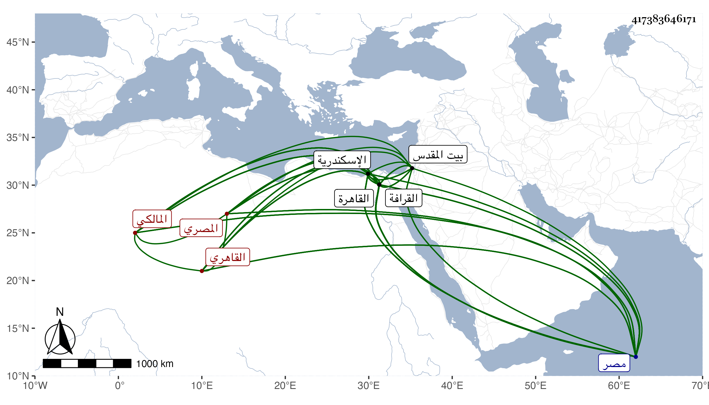

0902Sakhawi.DawLamic.ITO20230111-ara1.EIS1600.417383646171
Biography ID: 417383646171
629
محمد بن عمار بن محمد بن أحمد الشمس أبو ياسر ولقبه بعض شيوخه ناصر الدين أبو عبد الله بن الزين أبي ياسر أو أبي شاكر القاهري المصري المالكي والد أبي سهل ويعرف بابن عمار . ولد كما بخطه أذان عصر يوم السبت العشرين من جمادى الثانية سنة ثمان وستين وسبعمائة وقال شيخنا أنه أثبت محضرا يقتضي أن يكون سنة ثمان وخمسين ، ونحوه قول المقريزي أنه مات عن نيف وثمانين سنة والأول أثبت بقناطر السباع ونشأ في كنف والده وكان صالحا أوردت شيئا من ترجمته في معجمي فحفظ القرآن والعمدة والشاطبية وألفية الحديث والنحو والرسالة الفرعية ومختصر ابن الحاجب الأصلي وغير ذلك ، وعرض على جماعة كالتقي عبد الرحمن بن البغدادي وأبي عبد الله بن مرزوق الكبير والصدر المناوي والضياء العفيفي ونصر الله الكناني الحنبلي والبلقيني وابنه البدر والأبناسي وإمام الصرغتمشية والغماري والنورين الدميري أخي بهرام وعلي بن قطز الحكري المقري وعلى كل من الثلاثة الأخيرين قرأ الشاطبية تامة وكذا قرأ القرآن والعمدة بتمامهما على الولي عبد الله الجبرتي صاحب الزاوية الشهيرة بالقرافة وأجازوه كلهم في آخرين ممن لم يكتب بخطه أنه أجاز ، وتلا على الحكري لأبي عمرو في ختمتين الأولى للسوسي والثانية للدوري انتهى فيها إلى الحزب من يآس وأخذ علوم الحديث عن العراقي قرأ عليه نكته على ابن الصلاح دراية بحضرة الهيثمي رفيقه وابن الملقن قرأ عليه تقريب النووي وقطعة من شرحه للعمدة والبلقيني قرأ عليه قطعة من محاسن الاصطلاح له ولازمه في دروس التفسير بالبرقوقية والعربية والصرف عن المحب بن هشام ولازمه مدة وكذا لازم الغماري حتى أخذ عنه أيضا النحو واللغة وغيرهما من العلوم اللسانية والعروض مع قطعة من الكشاف ومن شرح له على ابن الحاجب الظاهر أنه الأصلي والعز بن جماعة في كثير من الفنون التي كان يقرئها وقرأ هو عليه كل مختصر ابن الحاجب الأصلي مع قطعة من كل من التلخيص ومن شرحيه المطول والمختصر وأخذ أصول الفقه أيضا عن ابن خلدون مع سماع قطعة من مقدمة تاريخه وتفقه في الابتداء بأبي عبد الله محمد الزواوي ثم لقي أبا عبد الله بن عرفة باسكندرية في قفوله من الحج فقرأ عليه قطعة صالحة من مؤلفه الشهير وكذا أخذ الفقه أيضا عن بهرام وعبيد البشكالسي وابن خلدون وناصر الدين أحمد بن التنسي وآخرين وصحب غير واحد من الصوفية كمحمد المغيربي خادم اليافعي وانتفع به في السلوك وغيره بأبي عبد الله محمد الدكالي المغربي وطلب الحديث بنفسه فقرأ وسمع أشياء بالقاهرة واسكندرية فكان من شيوخه بالقاهرة الصلاح الزفتاوي وابن أبي المجد والتنوخي وابن الشيخة والمطرز والتاج الصردي والأبناسي والبلقيني والعراقي والهيثمي والغماري والمراغي وعبيد البشكالسي والسويداوي والحلاوي والنجم البالسي وإمام الصرغتمشية والتاج بن الفصيح والجوهري والشمس محمد بن إبرهيم العاملي ومنهم باسكندرية البهاء عبد الله الدماميني والزين محمد بن أحمد الفيشني المرجاني وابن الموفق وابن قرطاس في آخرين كالفخر بن أبي شافع ومحمد بن التقي التونسي والتاجين ابن موسى وابن الخراط وناصر الدين محمد بن عبد الرحيم الحراني وابن الهزبر ، ورافق شيخنا في كثير منه سيما باسكندرية ، وأجاز له أبو الخير بن العلائي وأبو حفص البالسي وابن قوام ومحمد بن محمد بن يفتح الله وفاطمة ابنة ابن المنجا وفاطمة وعائشة ابنا ابن عبد الهادي وطائفة ، وأذن له معظم شيوخه في الإقراء والإفتاء كابن عرفة وابن الملقن والعز بن جماعة ، واستقر معيدا بجامع طولون بل مدرسا للفقه بالمسلمية بمصر عوضا عن ابن مكين وبقبة الصالح إسمعيل داخل البيمارستان عوضا عن ابن خلدون وعمل لكل منهما أجلاسا حافلا شهده الأكابر وبالبرقوقية بعد البساطي وشيخا للصوفية بزاوية الجبرتي ثم تركها ، وناب في القضاء مسؤلا بل استخلفه الشمس بن معبد المدني بمرسوم حين سفره ، وحج في سنة خمس وثمانمائة حجة الإسلام وكانت الوقفة الجمعة وزار بيت المقدس . وصنف قديما بحيث قرض الغماري بعض تصانيفه ووقف عدة من شيوخه على بعضها ومنها غاية الإلهام في شرح عمدة الأحكام في ثلاث مجلدات والأحكام في شرح غريب عمدة الأحكام وزوال المانع في شرح جمع الجوامع وجلاب الموائد في شرح تسهيل الفوائد في ثمان مجلدات والكافي في شرح المغنى لابن هشام في أربع مجلدات واختصر توضيح ابن هشام وشرحه بل شرح مختصر ابن الحاجب الفرعي كتب منه إلي أثناء النكاح وقطعة من أواخره واختصر شرح ألفية العراقي للمؤلف ، ودرس وأعاد وأفتى وحدث وأفاد وانتفع به الأفاضل خصوصا في إقامته بمصر وهو المفتتح لقراءة تلخيص ابن أبي جمرة من البخاري عند ضريحه أول كل سنة . وكان إماما عالما علامة في الفقه وأصوله والعربية والصرف متقدما فيهما مشاركا في كثير من الفنون ممتع المحاضرة الفوائد حسن الإعتقاد في الصالحين أمارا بالمعروف كثير الابتهال محظوظا في استجلاب الأكابر بعزة نفس وشهامة قل أن يوجد في آخر عمره في مذهبه مجموعه ولولا مزيد حدته التي أدت إلى أن خرج عليه جذام قبل موته بسنين واستمر يتزايد إلى موته لأخذ عنه الجم الغفير ، ووصفه شيخنا في بعض ما أثبته له بالشيخ الإمام العلامة الفقيه الفاضل الفهامة المفيد المحدث . وذكره في إنبائه باختصار فقال : الشيخ الإمام العالم العلامة اشتغل قديما ولقي المشايخ وسمع من كثير من شيوخنا وقرأ بنفسه ولم يكثر وسمع معي بالقاهرة واسكندرية وكان صاحب فنون حسن المحاضرة محبا في الصالحين حسن المعتقد جمع مجاميع كثيرة وشرح العمدة وكتب على التسهيل واختصر كثيرا من الكتب المطولة وسكن مصر بجوار جامع عمرو مدة وانتفع به المصريون وكذا سكن بتربة الشيخ عبد الله الجبرتي بالقرافة مدة . وقال البدر العيني كان من أهل العلم لكن كانت عنده طرف تعتعة وحركة المجانين يركب الحمار وتحت فخذه عصا ثخينة ، وقال المقريزي كتب على الفتوى ودرس وصار ممن يعتقد فيه الخير وقال جاره يحيى العجيسي إنه كان مع كثرة طلبه من الناس وأخذه من صالحهم وطالحهم إذا ناب في القضاء لا يقبل من أحد شيئا لا هدية ولا غيرها وينفذ الأحكام في الأكابر والأصاغر . مات في محل سكنه بالناصرية من بين القصرين يوم السبت رابع عشر ذي الحجة سنة أربع وأربعين وصلي عليه بباب النصر تقدم الناس شيخنا ودفن بحوش الحنابلة أصهاره تجاه تربة كوكاي رحمه الله وإيانا . ومن نظمه :
| رويت عن ابن عمار حديثا | فذكره بذاك على لساني |
| فإن لم يفهم العربي يوما | فحدثه إذا بالتركماني |
وقال :
| يا رب يا غفار يا باري | تدارك برحماك ابن عمار |
وقد طولت ترجمته في معجمي وفيها فوائد .
